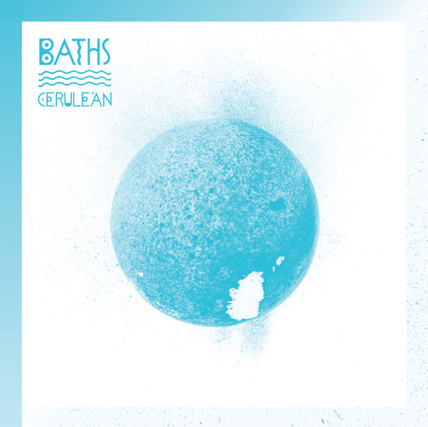

Will Wiesenfield is a classically trained musician, and began learning the piano at the age of four "to compete with his brother". By twelve he had "completely abandoned it," but continual musical experimenting lead him to record his first piece of music at age fourteen. Under a previous moniker, [Post-foetus], he released four albums and three EPs. He also ventured into a more ambient style with side-project Geotic, a project which Irish magazine State.ie called "gorgeous". After adopting the name Baths, he released the debut album Cerulean on Anticon in 2010. He recorded the entire album in two months from his bedroom. It was listed by The A.V. Club as the 21st best album of 2010. It also made Pitchfork Media's "Album of the Year: Honorable Mention" list.
